サービス機能¶
本装置の標準状態のサービス機能では、基本機能としてBTインターフェースの制御及び各種デバイスの登録機能のみサポートします。尚、OpenBlocks IX9ではBTインターフェースデバイスを接続した場合にのみ表示されます。
通常では、サービスタブを選択すると以下のような画面が表示されます。
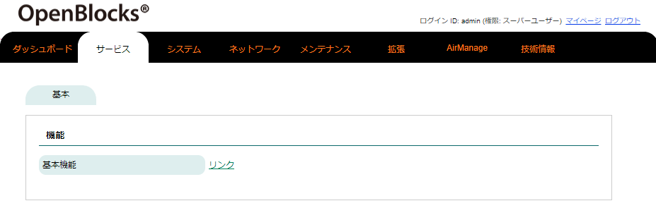
基本機能のリンクを押すと以下のような画面に遷移します。
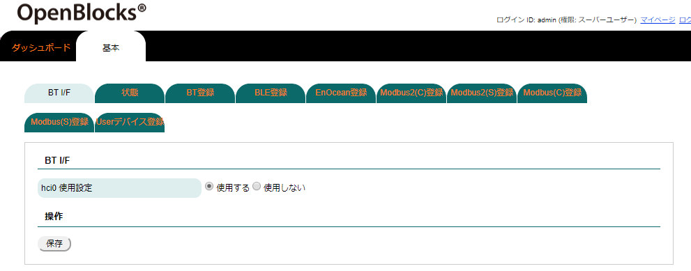
BT I/F制御¶
OpenBlocksシリーズがIoTデバイスとして標準サポートしているインターフェースの一つとしてBTがあります。BTのインターフェースの制御用として、『BT I/F』タブから設定が可能です。(OpenBlocks IX9ではBTインターフェースデバイスを接続している場合のみ、表示されます)
BT I/F |
|
|---|---|
項目 |
備考 |
hciN使用設定 |
BTのインターフェースの使用設定が可能です。 『使用する』にした場合、BT I/FがUP状態となります。 また、『使用しない』にした場合、BT I/FがDOWN状態となります。 |
状態¶
OpenBlocksシリーズがIoTデバイスとして標準サポートしているインターフェースの一つとしてBT状態を『状態』タブから確認できます。(OpenBlocks IX9ではBTインターフェースデバイスを接続している場合のみ、表示されます)
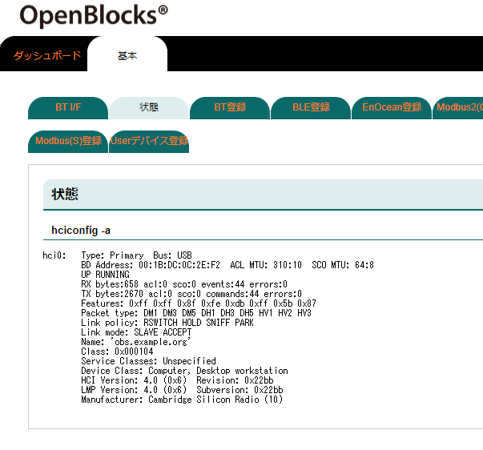
状態 |
|
|---|---|
項目 |
備考 |
hciconfig -a |
BTのインターフェースの状態を確認できます。 |
BT登録¶
BT I/FがUP状態となっている場合、BTデバイスの登録が行えます。
検出前 |
検出後 |
|---|---|
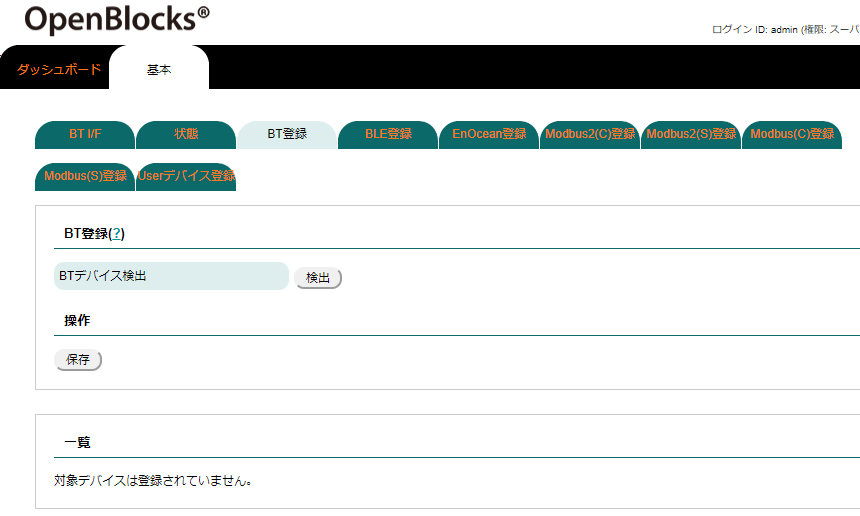 |
|

BT登録 |
|
|---|---|
項目 |
備考 |
BTデバイス検出 |
「検出」のボタンを押すと周囲に存在するBTデバイスを一覧に表示します。 一覧の中から利用するデバイスの使用設定にチェックを入れることでペアリングが実行されます。 ペアリング完了後に保存ボタンを押すことで登録されます。 |
Device Name |
BTデバイスの検出の際に取得したディスカバリデータをもとにデバイス名を表示します。 |
Device Address |
BTデバイスの検出の際に取得したディスカバリデータをもとにデバイスアドレスを表示します。 |
Memo |
BTデバイスの検出の際に取得したディスカバリデータをもとにデバイス名をデフォルトで設定しま す。このフィールドは編集可能ですので修正が必要な場合には適宜修正を行ってください。 |
尚、BTデバイスが登録されている場合、一覧部に登録デバイスの一覧が表示されます。ここからデバイスの削除及びメモ情報の更新が行えます。
BLE登録¶
BT I/FがUP状態となっている場合、BLEデバイスの登録が行えます。
注釈
IoTデータ制御機能等にてBT I/Fを使用している場合、検出が行えません。そのため、事前にBT I/Fを使用しているプロセスを停止させてください。 尚、IoTデータ制御機能が使用している場合には、ダッシュボードから停止可能です。
検出前 |
検出後 |
|---|---|
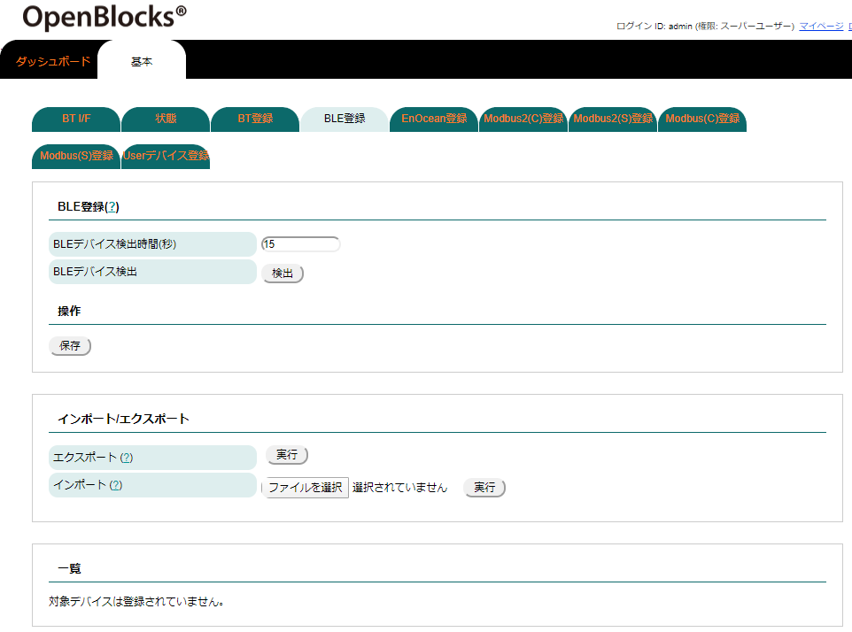 |
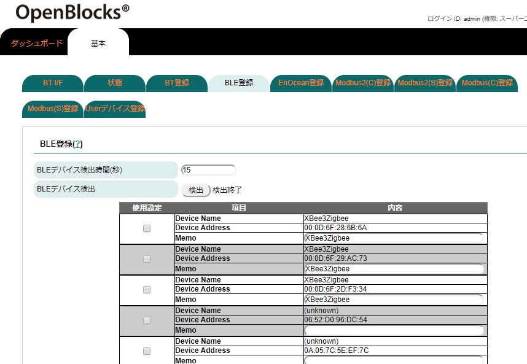 |
BLE登録 |
|
|---|---|
項目 |
備考 |
BLEデバイス検出時間(秒) |
BLEデバイスの検出時間を秒単位で設定します。 |
BLEデバイス検出 |
「検出」のボタンを押すと周囲に存在するBLEデバイスを一覧に表示します。 一覧の中から利用するデバイスの使用設定にチェックを入れ保存ボタンを押すことで登録されま す。 |
Device Name |
BLEデバイスの検出の際に取得したアドバタイズデータをもとにデバイス名を表示します。 |
Device Address |
BLEデバイスの検出の際に取得したアドバタイズデータをもとにデバイスアドレスを表示します。 |
Memo |
BLEデバイスの検出の際に取得したアドバタイズデータをもとにデバイス名をデフォルトで設定しま す。このフィールドは編集可能ですので修正が必要な場合には適宜修正を行ってください。 |
尚、BLEデバイスが登録されている場合、一覧部に登録デバイスの一覧が表示されます。ここからデバイスの削除及びメモ情報の更新が行えます。
インポート/エクスポート |
|---|
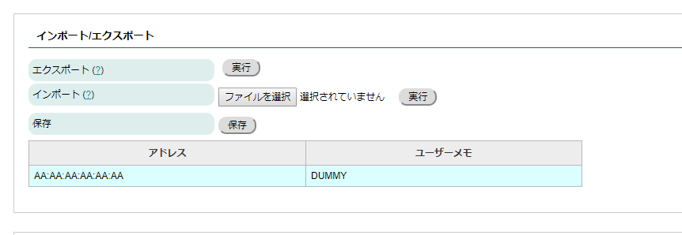 |
インポート/エクスポート |
|
|---|---|
項目 |
備考 |
エクスポート |
本筐体が保持しているBLEデバイス情報をJSONファイルとしてエクスポートします。 |
インポート |
JSONファイルを入力し、本筐体へ登録及び更新したいBLEデバイス情報をインポートします。 |
保存 |
インポートしたBLEデバイスのJSONファイルの内容を本筐体へ保存します。 |
JSONファイルの内容はWEB UIのバージョンによって異なる恐れがあります。
そのため、エクスポートしたJSONファイルを参考に作成してください。
EnOcean登録¶
本装置にEnOcean拡張モジュールを載せている場合、EnOceanでのデバイスの情報を取得できます。(拡張機能からIoTデータ制御機能をインストールしている場合に限ります)
そのため、『EnOcean登録』タブから取得対象とするEnOceanデバイスの登録が行えます。
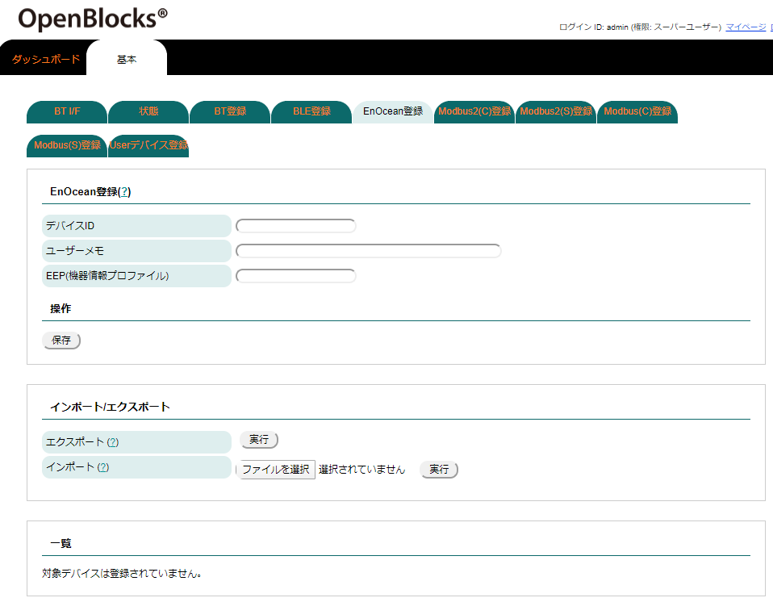
EnOcean登録 |
|
|---|---|
項目 |
備考 |
デバイスID |
登録対象のEnOceanデバイスのデバイスIDを設定します。 |
ユーザーメモ |
登録対象のEnOceanデバイスに対して、メモを設定することが行えます。 のユーザーメモはクラウドとのデータ通信に用いることができます。 |
EEP(機器情報プロファイル) |
登録対象のEnOceanデバイスのEEPを設定することができます。このEEPに正しい情報を設定している 場合、EnOceanのデバイスデータを温度・湿度等の情報を制御することができます。 |
尚、EnOceanデバイスが登録されている場合、一覧部に登録デバイスの一覧が表示されます。ここからデバイスの削除及びメモ情報の更新が行えます。
インポート/エクスポート |
|---|
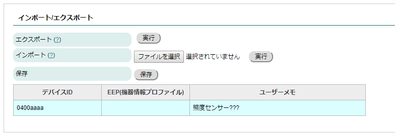 |
インポート/エクスポート |
|
|---|---|
項目 |
備考 |
エクスポート |
本筐体が保持しているEnOceanデバイス情報をJSONファイルとしてエクスポートします。 |
インポート |
JSONファイルを入力し、本筐体へ登録及び更新したいEnOceanデバイス情報をインポートします。 |
保存 |
インポートしたEnOceanデバイスのJSONファイルの内容を本筐体へ保存します。 |
JSONファイルの内容はWEB UIのバージョンによって異なる恐れがあります。
そのため、エクスポートしたJSONファイルを参考に作成してください。
Modbus2(C)登録¶
PD Handler Modbus2 ClientにてModbusプロトコルを話すデバイスの登録ができます。この登録したデバイス情報をもとにIoTデータ制御機能にて送受信等の設定が可能になります。(IoTデータ制御機能はメンテナンス→拡張機能からインストールしてください)
そのため、『Modbus2(C)登録』タブからデバイスの登録が行えます。
※Modbus2クライアントデバイスは本筐体から対象デバイスに対して、データを取得するデバイスとしています。
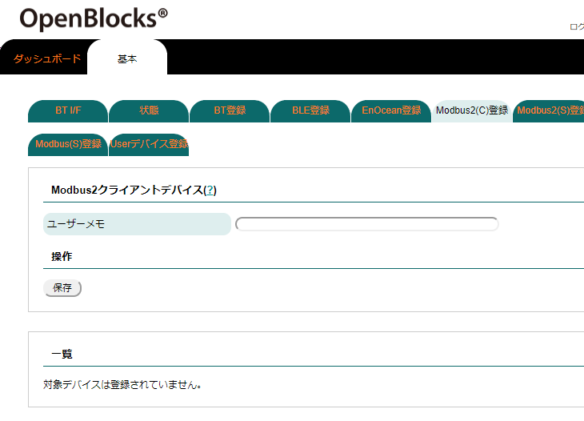
Modbus2クライアントデバイス |
|
|---|---|
項目 |
備考 |
ユーザーメモ |
登録対象のModbus2クライアントデバイスに対して、メモを設定することが行えます。 このユーザーメモは内部的な情報を保存するフィールドとなります。そのため、クラウド等に データは送信されません。 |
※本デバイスの登録ではメモのみの登録となります。使用するデバイスファイル等の設定に関しては本項目では設定は行いません。
尚、Modbus2クライアントデバイスが登録されている場合、一覧部に登録デバイスの一覧が表示されます。ここからデバイスの削除及びメモ情報の更新が行えます。
Modbus2(S)登録¶
PD Handler Modbus2 ServerにてModbusプロトコルを話すデバイスの登録ができます。この登録したデバイス情報をもとにIoTデータ制御機能にて送受信等の設定が可能になります。(IoTデータ制御機能はメンテナンス→拡張機能からインストールしてください)
そのため、『Modbus2(S)登録』タブからデバイスの登録が行えます。
※Modbus2サーバーデバイスは本筐体に対して対象デバイスがModbusプロトコルにて送信するデバイスとしています。
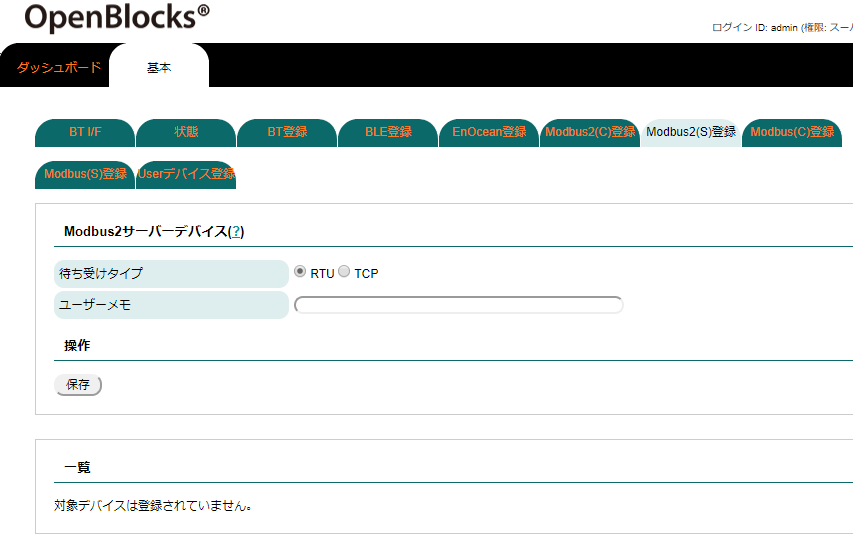
Modbus2サーバーデバイス |
|
|---|---|
項目 |
備考 |
待ち受けタイプ |
登録対象のModbusサーバーデバイスに対して、待ち受けタイプを設定します。 待ち受け方法は以下の2種類から設定可能です。 ・TCP : Ethernet等のネットワークでの待ち受け ・RTU : シリアルデバイスファイルでの待ち受け |
ユーザーメモ |
登録対象のModbus2サーバーデバイスに対して、メモを設定することが行えます。 このユーザーメモは内部的な情報を保存するフィールドとなります。そのため、クラウド等に データは送信されません。 |
※本デバイスの登録では待ち受けタイプ・メモのみの登録となります。使用するデバイスファイル等の設定に関しては本項目では設定は行いません。
尚、Modbus2サーバーデバイスが登録されている場合、一覧部に登録デバイスの一覧が表示されます。ここからデバイスの削除及びメモ情報の更新が行えます。
Modbus(C)登録¶
Modbusプロトコルを話すデバイスの登録ができます。この登録したデバイス情報をもとにIoTデータ制御機能にて送受信等の設定が可能になります。(IoTデータ制御機能はメンテナンス→拡張機能からインストールしてください)
そのため、『Modbus(C)登録』タブからデバイスの登録が行えます。
※Modbusクライアントデバイスは本筐体から対象デバイスに対して、データを取得するデバイスとしています。
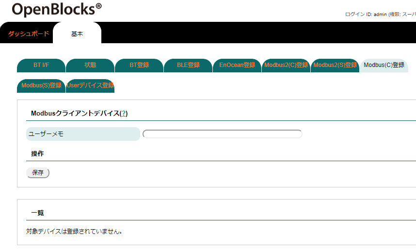
Modbusクライアントデバイス |
|
|---|---|
項目 |
備考 |
ユーザーメモ |
登録対象のModbusクライアントデバイスに対して、メモを設定することが行えます。 このユーザーメモはクラウドとのデータ通信に用いることがあります。 |
※本デバイスの登録ではメモのみの登録となります。使用するデバイスファイル等の設定に関しては本項目では設定は行いません。
尚、Modbusクライアントデバイスが登録されている場合、一覧部に登録デバイスの一覧が表示されます。ここからデバイスの削除及びメモ情報の更新が行えます。
Modbus(S)登録¶
Modbusプロトコルを話すデバイスの登録ができます。この登録したデバイス情報をもとにIoTデータ制御機能にて送受信等の設定が可能になります。(IoTデータ制御機能はメンテナンス→拡張機能からインストールしてください)
そのため、『Modbus(S)登録』タブからデバイスの登録が行えます。
※Modbusサーバーデバイスは本筐体に対して対象デバイスがModbusプロトコルにて送信するデバイスとしています。
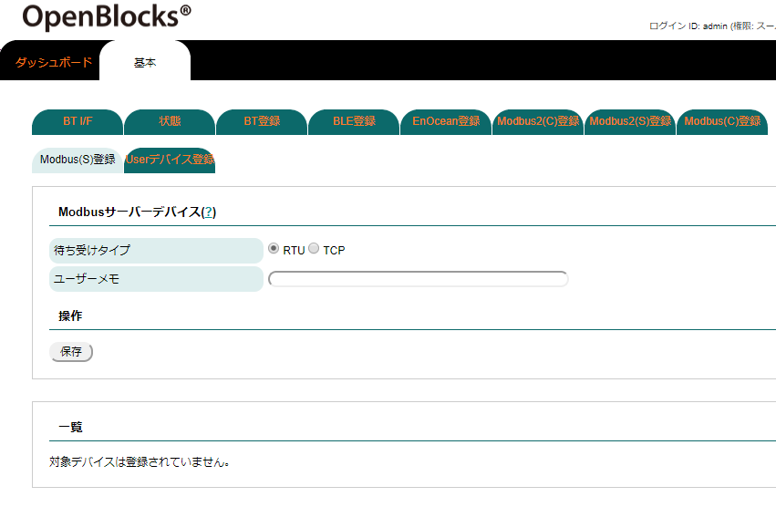
Modbusサーバーデバイス |
|
|---|---|
項目 |
備考 |
待ち受けタイプ |
登録対象のModbusサーバーデバイスに対して、待ち受けタイプを設定します。 待ち受け方法は以下の2種類から設定可能です。 ・TCP : Ethernet等のネットワークでの待ち受け ・RTU : シリアルデバイスファイルでの待ち受け |
ユーザーメモ |
登録対象のModbusサーバーデバイスに対して、メモを設定することが行えます。 このユーザーメモはクラウドとのデータ通信に用いることがあります。 |
※本デバイスの登録では待ち受けタイプ・メモのみの登録となります。使用するデバイスファイル等の設定に関しては本項目では設定は行いません。
尚、Modbusサーバーデバイスが登録されている場合、一覧部に登録デバイスの一覧が表示されます。ここからデバイスの削除及びメモ情報の更新が行えます。
Userデバイス登録¶
上記のデバイス種類とは異なるデバイスを仮想的な登録ができます。この登録したデバイス情報をもとにIoTデータ制御機能にて送受信等の設定が可能になります。(IoTデータ制御機能はメンテナンス→拡張機能からインストールしてください)
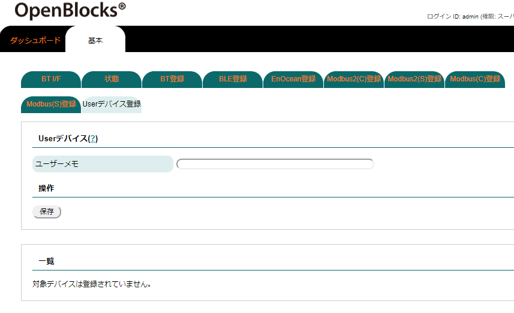
Userデバイス |
|
|---|---|
項目 |
備考 |
ユーザーメモ |
登録対象のUserデバイスに対して、メモを設定することが行えます。 |
尚、Userデバイスが登録されている場合、一覧部に登録デバイスの一覧が表示されます。ここからデバイスの削除及びメモ情報の更新が行えます。